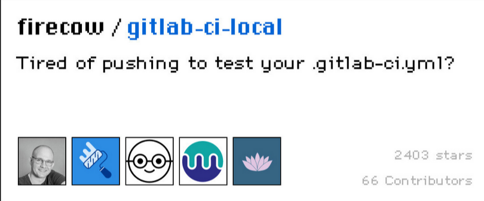

Capek Ngepush? Testing Gitlab CI/CD dengan gitlab-ci-local

Pasti kalian kesel banget dong liat gambar diatas, gimana nggak kesel, udah capek2 bikin pipeline, ehh ketika di push malah error, belom lagi nunggunya lama cuma buat tau pipeline yang kita bikin sukses apa nggak.. Pengen nangis aja rasanya, apalagi errornya ga cuma sekali (baca: skill issue) 😭
Untungnya, ada om Nielsen yang bikin tools menarik banget nih, yaitu

Sebenernya benda apa sih itu?
Simpelnya gini, agent yang ada pada gitlab runner di cloning dan bisa kita jalanin di mesin lokal kita 😱
Emangnya kenapa tuh kalo bisa jalan di mesin lokal kita ?
hadeuhhh, jadi gini.. kalo misal si runner bisa kita jalanin di mesin lokal kita, berarti kita gausah susah2
Lahh… Terus apa bedanya dong sama gitlab runner biasa? Kan bisa di install di lokal juga!?
iyaa, bisa di install juga di lokal, tapi buat triggernya harus dari